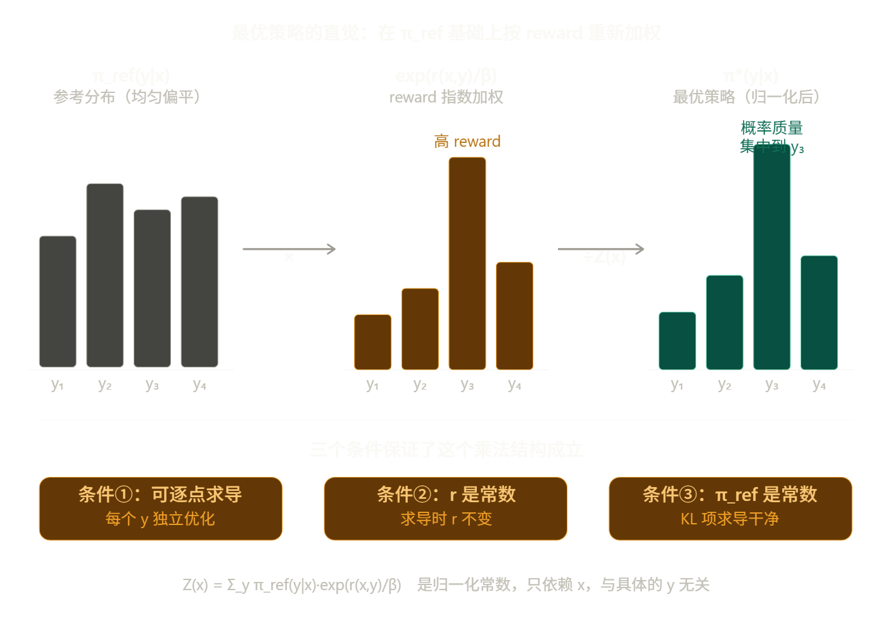
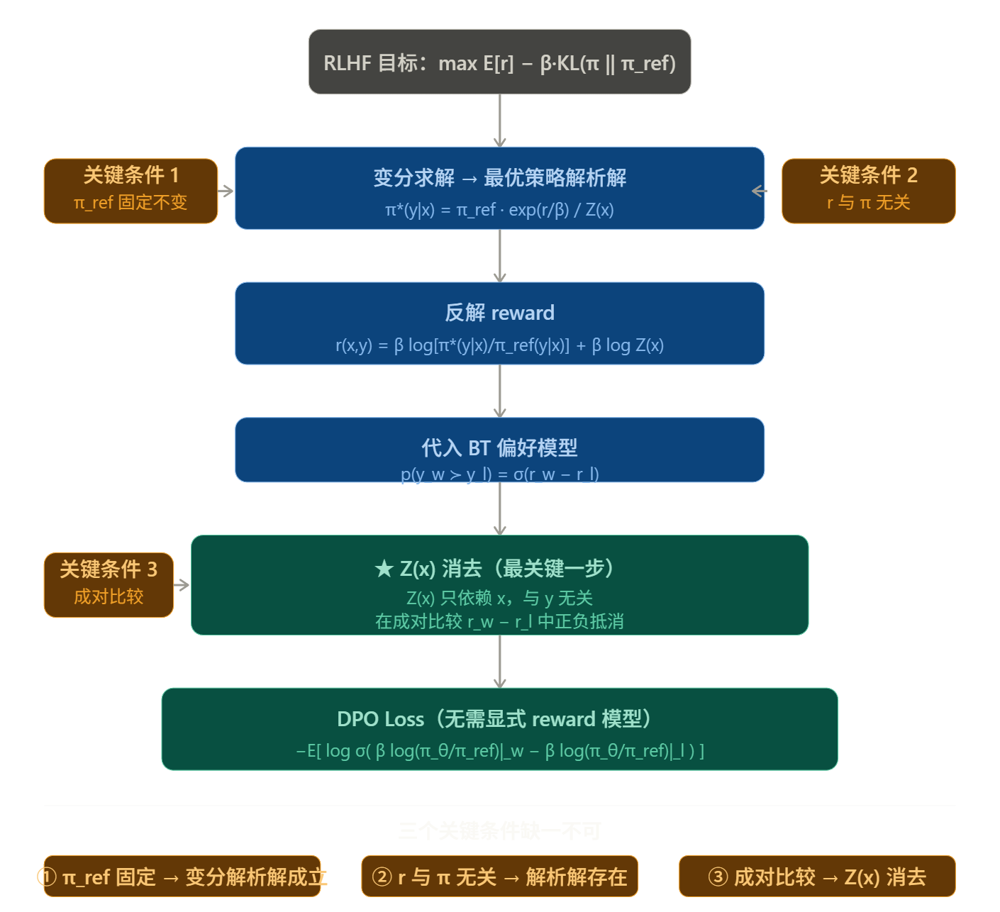

DPO
文档信息
创建时间：2026-3-13 | 更新时间：2026-3-24
论文链接 Direct Preference Optimization: Your Language Model is Secretly a Reward Model
核心思路
在 DPO 出现之前，学术界普遍认为要对齐人类偏好，必须经过以下流程：
- 训练奖励模型 (Reward Model): 给几万对
(好回答, 坏回答)，让一个模型学会打分。 - 强化学习 (PPO): 用这个打分模型作为“老师”，通过 PPO 算法不断调整大模型的参数。
痛点： PPO 极其难调，不仅吃显存，而且对超参数非常敏感，稍有不慎模型就会崩溃。
于是作者提出了一个大胆的猜想：一个训练良好的大模型，其输出概率本身就隐藏了“奖励”信息。
如果模型对回答 A 的概率远高于回答 B，那本质上就意味着模型认为 A 的“奖励值”更高。既然如此，为什么我们还要费劲去训练一个额外的奖励模型呢？
作者通过数学公式证明了最优奖励函数（Optimal Reward Function）可以完全由模型输出概率的对数比来表达。
简单来说，他们推导出了一个恒等式，将“奖励值”替换成了“模型概率”。这样一来：
- 过去： 最小化（模型预测分数与人类打分的差异）。
- 现在： 最大化（好答案相对于坏答案的胜出概率）。
这一步直接把强化学习降维打击成了二分类交叉熵损失（Binary Cross Entropy Loss），就像我们训练图片分类器一样简单。
数学推导
RLHF 的原始目标
RLHF 想做的事情是：在一个奖励模型 \(r(x, y)\) 的指导下优化策略，同时不让策略跑得离参考模型太远：
这个 KL 项的作用是防止策略"钻空子"——如果没有它，策略会找到一些 reward 很高但毫无意义的奇怪输出。
求解最优策略
问题设置
对于固定的输入 \(x\)，我们想找一个分布 \(\pi(\cdot | x)\)，使得下面的目标最大：
同时满足归一化约束：\(\sum_y \pi(y|x) = 1\)。
注意这里的优化变量是整个分布 \(\pi(\cdot|x)\)，也就是对每个可能的输出 \(y\)，我们要决定分配多少概率质量。
用 Lagrange 乘数法求解
加入归一化约束，构造 Lagrangian：
对每个特定的 \(y\) 取偏导，令其为零：
这里出现了三项。现在就是三个条件发挥作用的地方。
条件①：优化变量是整个分布，可以逐点取变分
上面对 \(\pi(y|x)\) 求偏导，隐含的假设是：改变某个 \(y\) 处的概率值，不会直接影响目标函数里其他 \(y'\) 处的项。换句话说，\(\pi(y|x)\) 和 \(\pi(y'|x)\) 是独立的自由变量（归一化约束单独用 \(\lambda\) 处理）。
如果优化变量是神经网络参数 \(\theta\)，那么改变 \(\theta\) 会同时影响所有 \(y\) 的概率，各 \(y\) 之间通过参数耦合，就不能逐点求导，这个解析解就不存在了。
所以这个条件保证了：我们在做的是函数空间上的优化，而不是参数空间上的优化。
条件②：reward 只是 \((x,y)\) 的函数，与策略无关
对 \(\pi(y|x)\) 求导时，\(r(x,y)\) 那一项直接给出：
这成立的前提是 \(r(x,y)\) 是个常数，与 \(\pi(y|x)\) 无关。
如果 \(r\) 依赖于策略——比如 SAPO 里 advantage 是当前这批采样归一化的结果——那么求导时还会多出一项 \(\frac{\partial r}{\partial \pi(y|x)}\)，方程变成：
这个方程对 \(\pi(y|x)\) 不再有干净的解析解，因为左边两项都含有 \(\pi(y|x)\)，无法分离。
条件③：\(\pi_\text{ref}\) 固定不变
KL 散度展开后，对 \(\pi(y|x)\) 求导给出：
这里用到了乘积法则：
这个计算成立的关键是：求导时 \(\pi_\text{ref}(y|x)\) 是常数，所以 \(\frac{\partial \pi_\text{ref}}{\partial \pi} = 0\)。
如果 \(\pi_\text{ref}\) 也依赖于 \(\pi\)（比如它就是 \(\pi\) 本身的某个历史版本，且我们把这种依赖计入图中），那么求导时还需要考虑 \(\pi_\text{ref}\) 对 \(\pi\) 的导数，整个 KL 项的导数形式就变了，方程无法干净求解。
三个条件都满足，偏导数方程是：
把含 \(\pi(y|x)\) 的项移到一边：
两边除以 \(\beta\)，取指数：
后面那个因子不含 \(y\)，记作常数 \(C\)：
最后用归一化条件 \(\sum_y \pi^*(y|x) = 1\) 确定 \(C\)：
得到最终结果：
直觉理解

直觉上，最优策略做的事情非常简单：把 \(\pi_\text{ref}\) 作为基底，按照 \(\exp(r/\beta)\) 对每个 \(y\) 重新加权，再归一化。
- \(\beta\) 大：\(\exp(r/\beta)\) 接近 1，最优策略接近 \(\pi_\text{ref}\)，KL 惩罚主导
- \(\beta\) 小：\(\exp(r/\beta)\) 差异悬殊，最优策略几乎把所有质量压到 reward 最高的 \(y\) 上，reward 主导
这个结构之所以这么干净，完全是因为三个条件保证了求导方程里每个 \(y\) 之间互不干扰——方程对每个 \(y\) 独立成立，于是解也对每个 \(y\) 独立写出来，最后只需一个归一化常数 \(Z(x)\) 收尾。
反解 reward
从上面的解析解，两边取对数，把 \(r(x,y)\) 解出来：
这一步是纯代数变换，没有任何额外假设。它的意思是：如果我们知道最优策略长什么样，就可以反推出对应的 reward。
引入 Bradley-Terry 偏好模型
RLHF 的另一半是：我们没有直接的 reward 标注，只有人类的成对偏好数据 \(y_w \succ y_l\)。BT 模型假设：
现在把第三步的 \(r\) 代入：
关键时刻：\(\beta \log Z(x)\) 在两项里符号相反，直接消掉：
\(Z(x)\) 能消掉，是因为它只依赖于 \(x\)，与 \(y\) 无关，在成对比较里自然抵消。这是整个推导里最关键的一步。
DPO Loss
用参数化的 \(\pi_\theta\) 替换 \(\pi^*\)，对偏好数据做最大似然估计，取负对数得到：
推导成立的关键点

三个关键条件展开说：
条件①：\(\pi_\text{ref}\) 固定不变 变分求解的过程中，我们把 \(\pi_\text{ref}\) 当作常数处理。如果参考点在训练中移动（比如 SAPO 里的 \(\pi_{\theta_\text{old}}\)），那么"最优策略"本身就是一个移动靶，解析解在下一步就失效了。
条件②：reward 与策略无关 RLHF 假设 \(r(x,y)\) 是人类偏好的固有属性，和当前策略是谁无关。这保证了变分法里对 \(\pi\) 求导时，\(r\) 是个常数，整个最优化问题是凸的，解析解才能干净地写出来。SAPO 的 advantage 是 group 内归一化的，依赖于当前这批采样，不满足这一条。
条件③：成对比较让 \(Z(x)\) 消去 这是整个推导最精妙的地方。\(Z(x)\) 是个关于 \(x\) 的求和，根本无法计算（词表指数级大）。但因为 BT 模型用的是差值 \(r_w - r_l\)，而 \(Z(x)\) 对 \(y_w\) 和 \(y_l\) 完全相同，一减就没了。这个消去不是凑巧，而是成对比较结构的必然结果